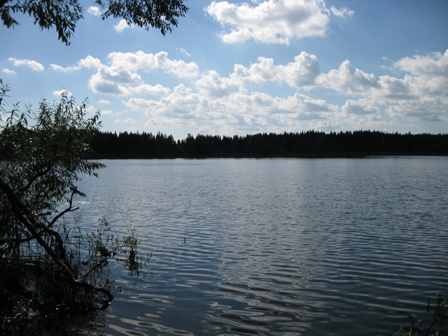
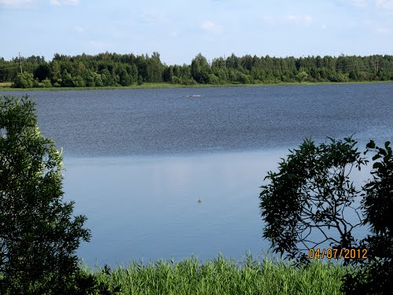
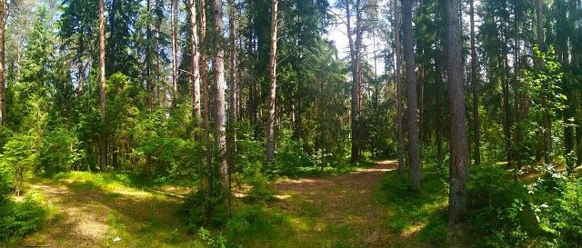
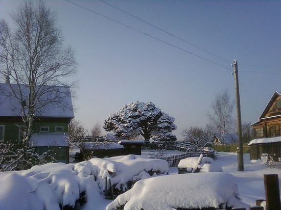
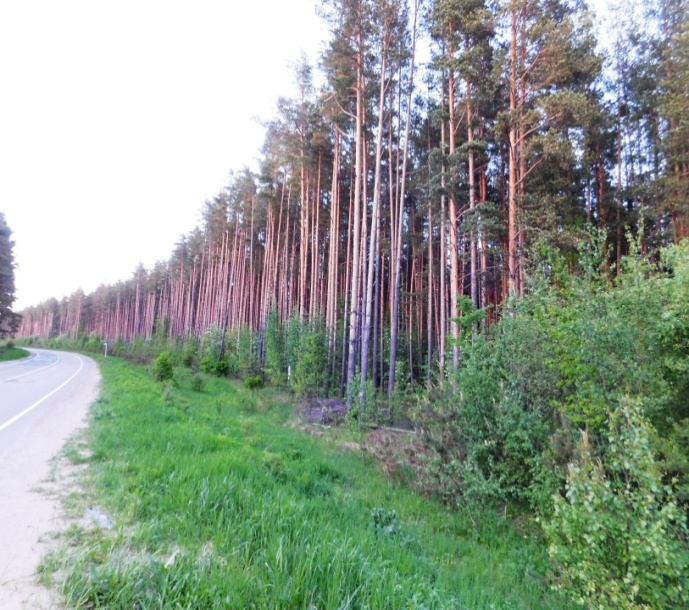
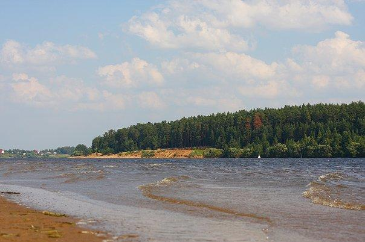
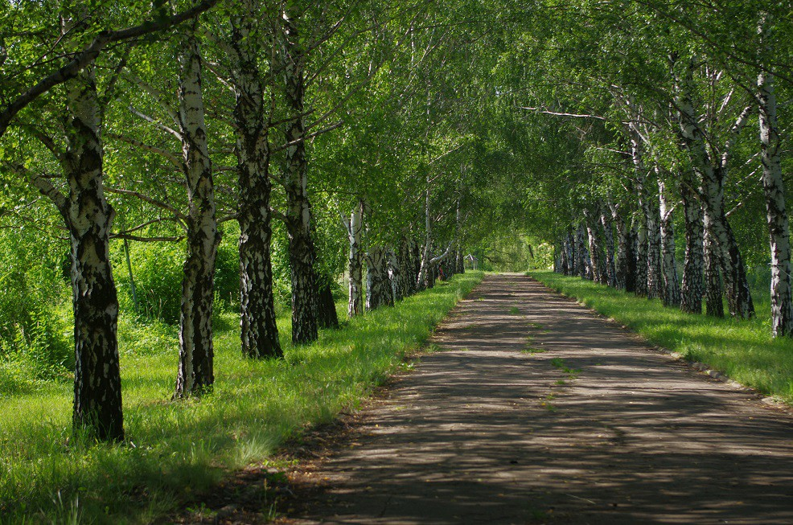

Природа
- Мыльцевский бор
1. «Провальные» озера

Озеро Покровское

Озеро Усад
Недалеко от Кимр есть удивительные провальные озера, «обросшие» преданиями и загадочными рассказами. Говорят, что плещутся они над крышами стоявших здесь некогда деревень. Так ли это, точно не знает никто. Начинается цепь озер с самого глубокого из водоемов, который находится под селом Губин Угол. Образовалось оно на месте болота, погубившего в свое время немало народу. Отсюда якобы и мрачное название.
Ходит в народе и другая легенда о братьях-разбойниках. Трое душегубов грабили купеческие лодочные обозы на Волге, а самих купцов отвозили в лесную чащу и убивали. За их злодеяния Бог ударил молнией в их жилище, отчего на этом месте и образовалось глубокое озеро. А братья меж тем покаялись и стали жить праведно. Один из них – Федор – поселился в местечке, названном потом Федоровкой. А Игнат и Демид дали названия деревням Игнатово и Демидовка. Красивая легенда, главное – поучительная!
Севернее Губиного Угла расположились ровным треугольником три провальных озера – Ильинское, Вышнево, Усад. О последнем старожилы рассказывают, что оно образовалось буквально на глазах, чему имелось немало свидетелей. Еще дальше на север раскинулись Василевское, Ченцовское и маленькое озерцо у Покровского села. По сообщению местных жителей, возникновению этих озер предшествовали интересные природные явления, необыкновенные звуки и шум. Научные экспедиции, работавшие в этих краях, предположили, что между всеми озерами имеется непосредственная связь, а образовались они в ходе геологических карстовых процессов. Однако до сих пор тайна озер до конца не раскрыта.
2. Заповедник «Клетинский бор» (деревня Нутромо)

Государственным природным ландшафтным заказником местного значения объявлен Клетинский бор, в котором расположена деревня Нутромо, ботаническим памятником федерального значения является дерево – сосна Банкса
3. Сосна Банкса (деревня Нутромо)

Уникальный ботанический памятник. Родина – Северная Америка. Эту сосну редко можно встретить где-нибудь на другом континенте. Названа в честь известного английского натуралиста и ботаника Джозефа Банкса (1743—1820), директора Kew Gardens (Англия). Помимо официального названия сосна Банкса имеет очень много неофициальных: сосна блэк джек, канадская роговая сосна, сосна Гудзонова залива, лабрадорская сосна, северная низкорослая сосна, сосна принцессы, щеголеватая сосна. Обычно дерево вырастает до 20 метров высотой и толщиной до 25 см, очень редко встречаются выдающиеся экземпляры высотой до 30 метров и толщиной до 60 см.
 
Особо охраняемыми природными территориями являются кимрские боры: Мыльцевский, Абрамовский, Белогородский, Титовский, Кревской, Топорок.
5. Аллея Покровская (деревня Покровское)
